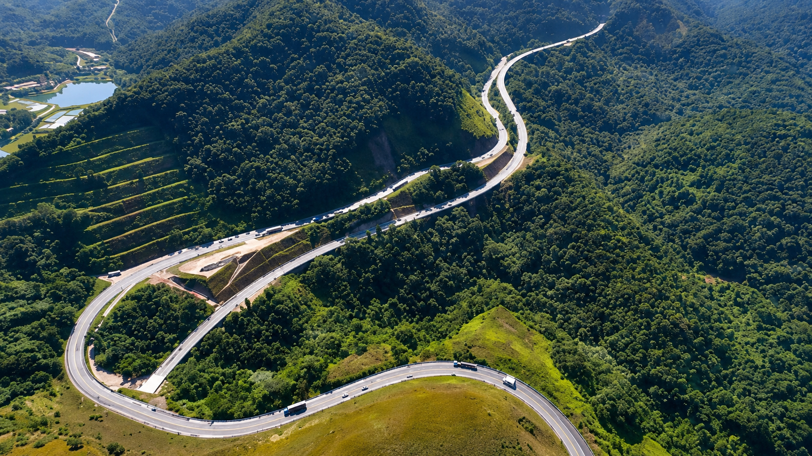
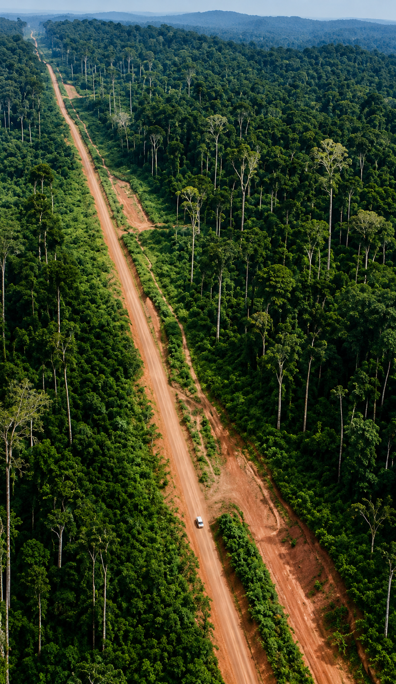

Rodovias do Brasil
AS ESTRADAS
QUE MOVEM O PAÍS

BR-116
Rodovia Presidente Dutra
A principal ligação entre São Paulo e Rio de Janeiro, responsável por transportar milhares de cargas diariamente.

BR-101
Rodovia Litorânea
Cortando o litoral brasileiro, conecta cidades, portos e centros industriais do Norte ao Sul.

BR-230
Transamazônica
Lama, floresta e desafios extremos em uma das estradas mais icônicas do Brasil.